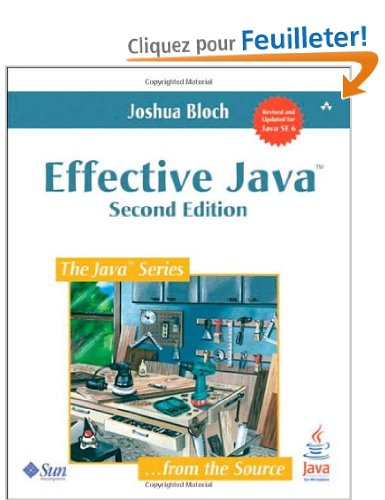
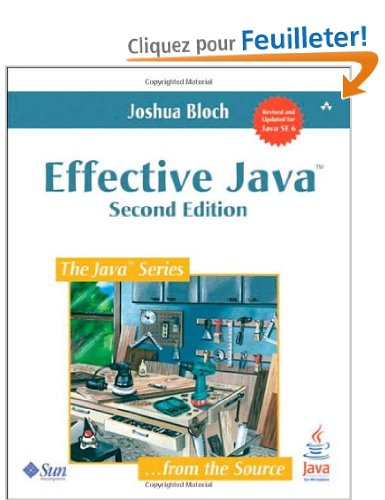

Coding Dojo ?
- C'est quoi ?
- Lieu d'apprentissage
- Pour quoi faire ?
- Terminer l'exercice
- Compétition
- S'améliorer en développement
- APPRENDRE !
- Terrain d'entrainement
- Pression
- Error is ok
Sujet : TDD
- Test Driven Development ?
- Think Given, When, Then
Pourquoi ?
- Les tests c'est pour ceux qui ne savent pas coder

Pourquoi ?
- Ready for change, no regression
- Tests = Specifications
- Tests = Documentation
- Start with the goal in mind
- Short Feedback loop
- Not just tests: the design
Planning du dojo
- Kata #1 Randori (20 min.) - Sujet : FizzBuzz
- Rétro. (5 min.)
- Kata #2 Pair prog. (20 min.) - Sujet : String Calculator
- Rétro. (5 min.)
- Kata #2 Pair prog. (2) (25 min.)
- Rétro. & Conclusion (15 min.)
Installation
- Environnement : Eclipse ou pour changer IntelliJ
- Le Code
- Pour les tests :
- Junit
-
AssertJ (librairie d'assertions, fork de
FestAssert)
- Eclemma (plugin couverture de code sous Eclipse)
-
InfiniTest (plugin IntelliJ/Eclipse pour lancer les tests
unitaires automatiquement à chaque changement)
-
MoreUnit (plugin IntelliJ/Eclipse pour améliorer
l'intégration de ses tests unitaires dans l'IDE)
Kata !!!
-
Whatever luck I had, I made. I was never a natural athlete, but I paid my dues in sweat and
concentration and took the time necessary to learn Karate and become World Champion.
-
Chuck Norris (American martial artist and actor. Also, the only man who has counted to infinity.
Twice.)
Kata #1: FizzBuzz
- 1 méthode :
int write(Integer i)
-
Pour un nombre saisi :
- s'il est multiple de 3 : écrire Fizz
- s'il est multiple de 5 : écrire Buzz
- sinon écrire le nombre
-
Mais de nouveaux besoins apparaissent :
-
si le nombre est multiple de 3 ou contient 3 : écrire
Fizz
-
si le nombre est multiple de 5 ou contient 5 : écrire
Buzz
Tips
- Tell a (simple) story
- A test must specify only one thing
- Slow down, Baby steps
A vos marques, prêts ? TDD ! (20 min)
Rétro (5 min)
- Difficultés rencontrées
- Couverture de tests
- Tester != coder
Tips #2
- First make it work, then make it right, then make it small and fast
- Care for your code, care for your tests
- Refactor, extract, helpers
Kata #2: String Calculator
- 1 method:
int add(String numbers)
-
The method can take 0, 1 or 2 numbers, and will return their sum for example "" or "1" or "1,2" (for an
empty string it will return 0)
- Tips #3
- Start with the simplest test case of an empty string and move to 1 and two numbers
-
Remember to solve things as simply as possible so that you force yourself to write tests you did not
think about
- Remember to refactor after each passing test
A vos marques, prêts ? TDD ! (20 min)
More rules...
- Allow the add method to handle an unknown amount of numbers
- Allow the add method to handle new lines between numbers (instead of commas):
- the following input is ok: "1\n2,3" (will equal 6)
- the following input is NOT ok: "1,\n" (not need to prove it - just clarifying)
More rules...
- Support different delimiters:
- to change a delimiter, the beginning of the string will contain a separate line that looks like
this: "//[delimiter]\n[numbers…]" for example "//;\n1;2" should return three where the default
delimiter is ';'
- the first line is optional. All existing scenarios should still be supported
-
Calling add method with a negative number will throw an exception "negatives not allowed" -
and the negative that was passed. If there are multiple negatives, show all of them in the exception
message
More rules...
- Numbers bigger than 1000 should be ignored, so adding 2 + 1001 = 2
- Delimiters can be of any length with the following format: "//[delimiter]\n" for example:
"//[***]\n1***2***3" should return 6
- Allow multiple delimiters like this: "//[delim1][delim2]\n" for example "//[*][%]\n1*2%3" should return 6
(make sure you can also handle multiple delimiters with length longer than one char)
Rétro du Kata (10 min)
- Tour de table : avancement, solutions, difficultés, ressenti
- En faire moins ? Pas forcément si simple !
- Pair programming ?
- Toujours peur du TDD ?
Rétro du Dojo (5 min)
- What went well ?
- What could be improved ?
- Actions
- ROTI
 
